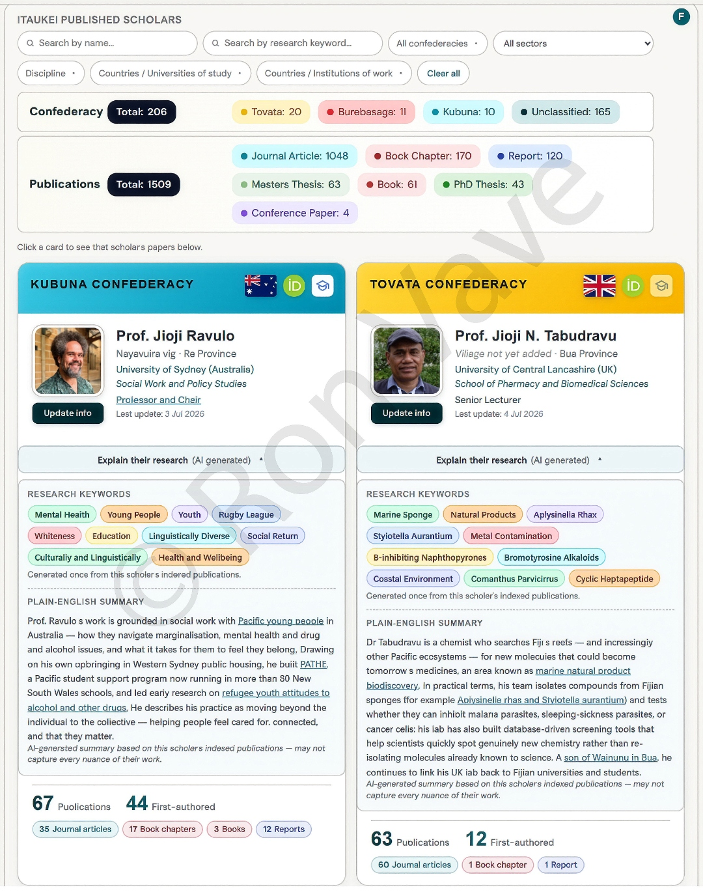

Help us tag every iTaukei Postgraduate scholar and researcher who have published to their village and province.
Bula vinaka!! Na yacaqu o Ron Vave, kau gone ni Yavusa Tonga ena koro ko Sawana (Vanua balavu, Lau), kau vasu kina koro ko Tiliva ena yasana vaka turaga o Bua. Ena gauna qo, au veiqaravi tiko ena University of Hawaiʻi at Mānoa e Honolulu.
For the past two years, I've been curating a database of iTaukei scholarly work, sharing it along the way in a closed Facebook group for iTaukei scholars and iTaukei at large.
Part of why I do this is that it's not iTaukei / Pacific Island culture to talk about our own achievements — successfully completing graduate studies, publishing a thesis, a journal article, and/or a book. Sharing on someone else's behalf takes that pressure off the scholar, and allows the rest of us see the breadth and depth of, not only their work, but the broader iTaukei researcher community.
The Facebook group only reaches its members, though, and each post is a one-off — it doesn't stay accessible to iTaukei outside the group, to iTaukei communities, to other iTaukei scholars, or to anyone else who'd benefit from knowing about this research. So I built a public database and dashboard: publications in and on Fiji, by iTaukei scholars and others, including publications by iTaukei scholars living outside Fiji. The purpose is the same as it's always been — showcase and elevate our scholarly work, and make it accessible to the wider public, especially decision-makers.
iTaukei database overview
Statistics describing the entire indexed database (as of Thursday, 9th July 2026, 10:05 PM FJT).
The above stats and the three sample maps (click to view them full screen) showcase only a small portion of the data out there. You can see in the maps that an iTaukei scholar's work that has been tagged to their Province and Confederacy can be used to filter data. Unfortunately, of the 397 iTaukei scholars and researchers in the database, I was only able to tag less than 20 to their paternal village and Province. It's a project I've put a great deal of myself into, built one entry at a time — and it's still growing, since this only reflects what I've been able to gather so far.
Sample scholar profile from the database below. Your contribution in tagging iTaukei scholars and researchers — along with their scholarly publications — to their village and province helps in several ways: (1) confederacies and provincial offices/councils can find their own scholars, whose advice can be sought on topics related to their field of expertise; and (2) it does something rarely done or seen in academia — grounding scholarly contributions to where we come from. Given the relationships that exist between villages, provinces, and confederacies in Fiji, it also enables scholarly-relational attribution, connecting our scholars to one another and opening up networking along the lines of these iTaukei relationships.

About the information used here. All of the information in this database is publicly available — from university and journal repositories, or elsewhere on the internet. Author names are extracted from the author lists on each paper. And while most iTaukei authors on this list are researchers and scholars, some are community members and support staff — people who also hold a lot of knowledge and skill, and who contributed to the success of the research or projects they were part of.
Why I'm asking for your help. One of the most useful things the dashboard does is let you drill down by confederacy and paternal province. That drilldown only works if we actually know each scholar's village and province — and for many, we still don't. If you know a scholar's village and province — paternal side, maternal side, or both — please add what you know below. You can also add scholars who aren't in the database yet. Every submission helps.
You don't need to know everything to help. Even the province alone — paternal or maternal — is enough to tag a scholar to the right confederacy. Fill in whatever you know, and leave the rest blank.
Vinaka vakalevu — thank you for helping lift up iTaukei scholarly work.
For more info or questions, contact itaukeischolar@gmail.com.
Curious how the crowdsourcing is going? See the public progress page →
Pick the iTaukei Postgraduate scholars you can help with
Search by name or browse the alphabet, tick every scholar you have information about, then continue. You can pick as many as you like in one go.